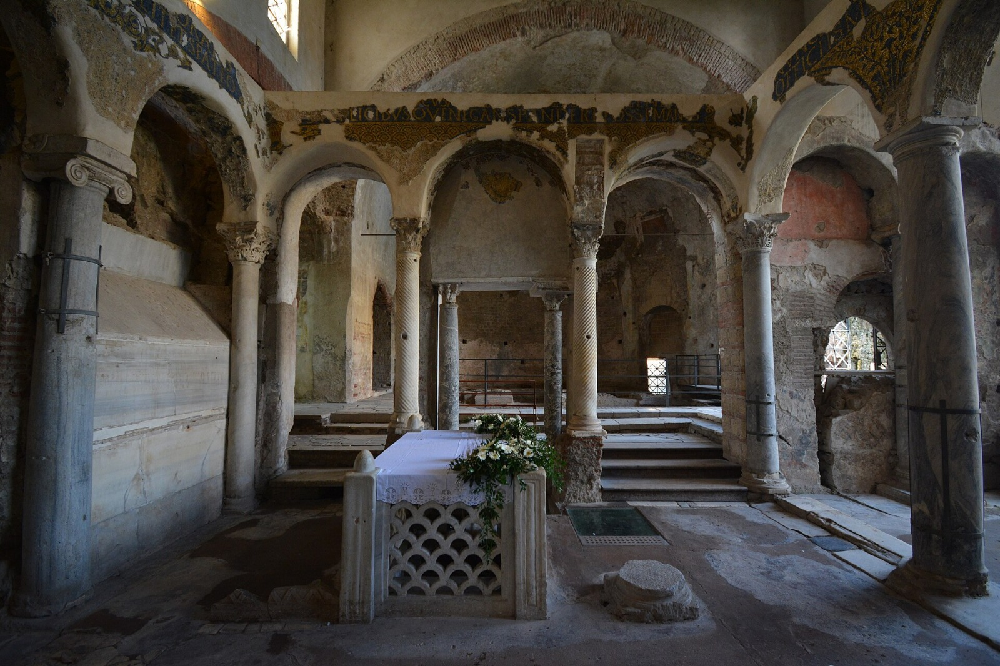

San Felice nasce nella seconda metà del III secolo, il termine “in Pincis” deriva da una chiesa a lui dedicata a nel V secolo d.C. presso la domus Pincia a Roma. Muore il 14 gennaio di un anno ancora sconosciuto, la sua tomba è importante poiché rappresenta una testimonianza significativa del primo cristianesimo in Campania, su di essa erano presenti dei fori che permettevano ai fedeli di calare oggetti affinché toccassero la tomba del santo, trasformandoli in reliquie di contatto (brandea) La tomba si trova a Cimitile, il suo nome deriva dal latino Coemeterium (cimitero), l'antica necropoli. Qui fu deposto il corpo del Santo e il nome con cui è conosciuto il suo sepolcro è Ara Veritatis, ovvero il luogo sacro dove la falsa testimonianza veniva punita da Dio.
La basilica Vetus (Basilica Antica) di Cimitile sorge sopra la tomba di San Felice. Il luogo in cui fu sepolto il santo era una necropoli, che nel tempo a causa di diverse costruzioni assunse l' aspetto esteriore di una città, apparendo da lontano un estensione urbana di Nola. Tale effetto ottico aumento con la realizzazione della via Annia Popilia che rasentò il sepolcreto e sulla quale furono aperti numerosi ingressi della necropoli, per cui chi giungeva a Nola spesso visitava prima la città dei morti e poi quella dei vivi. Con la diffusione del cristianesimo la tomba divenne oggetto di venerazione, pertanto fu edificata su di essa, nel IV secolo d. C., una struttura a tre navate progettata per gestire i numerosi pellegrini che, percorrendo la via Annia Popilia,visitavano il sito in occasione del dies natalis (giorno della morte o nascita al cielo) di San Felice. Quando San Paolino arrivò a Nola trovò questa Basilica ormai insufficiente per la folla di pellegrini, perciò la modificò radicalmente abbattendo la navata a nord della Basilica Vetus realizzando il triforio, un’apertura a tre archi che collegava la vecchia chiesa alla nuova Basilica Nova (V secolo d.C).

Foto di MentNFG (2024) - Tratta da Wikipedia - Basilica Vetus con tomba di San Felice in Pincis, Complesso basilicale paleocristiano, Cimitile